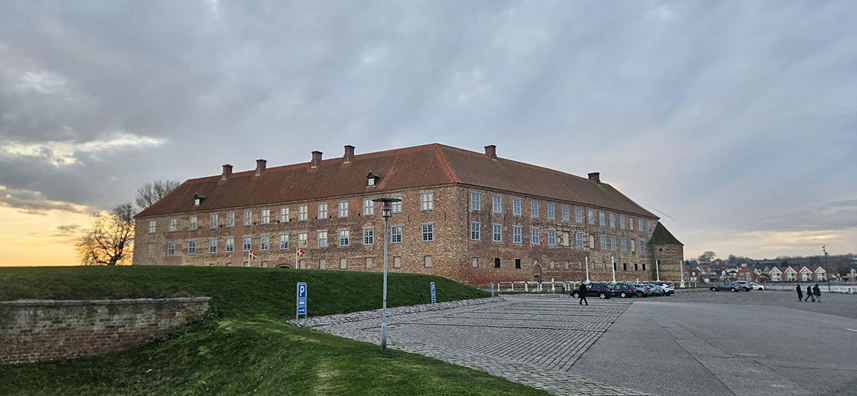
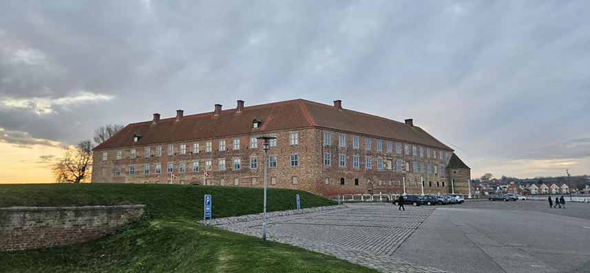

Hej, jeg hedder Martin Møller, og jeg er din lokale elektriker i Sønderborg og omegn
Jeg læste EUX Elektriker-uddannelsen på EUC Syd, hvor jeg både lærte det tekniske håndværk og fik erfaring gennem lærepladser hos lokale elektrikere.
Jeg blev udlært som elektriker i 2018 og har arbejdet i forskellige virksomheder. Efter min læretid vidste jeg hurtigt, at jeg ville arbejde selvstændigt, så jeg kunne komme tættere på mine kunder og levere den personlige service, jeg selv ville sætte pris på.
Som din lokalle elektrikker står jeg altid klar til at hører om dine ønsker så vi sammen finder den bedste løsning dig.
Jeg sørger altid for at
Kontakt mig
Tlf: +45 12 34 45 78
E-mail: martin.møller@gmail.com
Firma information
CVR: 12345678
Løkken 1, 6400 Sønderborg
Følg med